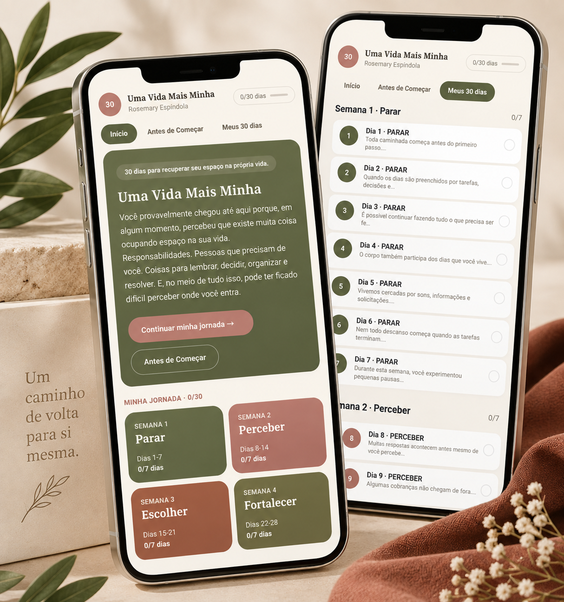

Uma experiência digital para mulheres que vivem cuidando, resolvendo e dando conta de tudo — e acabam deixando a si mesmas para depois.
Direto pelo celular. Um dia de cada vez.
QUERO COMEÇAR MEUS 30 DIAS
Uma Vida Mais Minha foi criado para ajudar você a perceber esses movimentos no dia a dia e começar a fazer escolhas que também considerem você.
Criar pequenas pausas e perceber como você está.
Reconhecer cobranças, necessidades e respostas que se repetem no seu dia a dia.
Começar a considerar seu tempo, sua vontade e seus limites nas pequenas decisões.
Praticar novas formas de responder ao que você começou a perceber.
Você não precisa reservar uma hora por dia.
A cada dia, abre o app e encontra uma reflexão, uma pequena experiência e espaços para fazer seus registros.
Algumas propostas levam poucos minutos. Outras continuam com você enquanto o dia acontece.
Se interromper por alguns dias, pode continuar de onde parou.
Sem transformar esse caminho em mais uma cobrança.
Uma experiência digital guiada de 30 dias, organizada em:
Parar • Perceber • Escolher • Fortalecer
Com reflexões, pequenas experiências, espaços para seus registros e acompanhamento dos dias percorridos.
Tudo pelo celular, com a possibilidade de adicionar o app à tela inicial.
Você começa com a vida que tem hoje.
30 dias para recuperar seu espaço na própria vida.
Experiência digital guiada de 30 dias.
Pagamento único
QUERO COMEÇAR MEUS 30 DIASNão. Se interromper, pode continuar de onde parou.
Algumas propostas levam poucos minutos. Outras são reflexões que você leva para o seu dia.
Não. A experiência acontece digitalmente pelo celular.
Sim. O app foi desenvolvido para celular e pode ser adicionado à tela inicial do aparelho.
Não. Uma Vida Mais Minha é uma experiência de reflexão e desenvolvimento pessoal e não substitui acompanhamento profissional quando necessário.